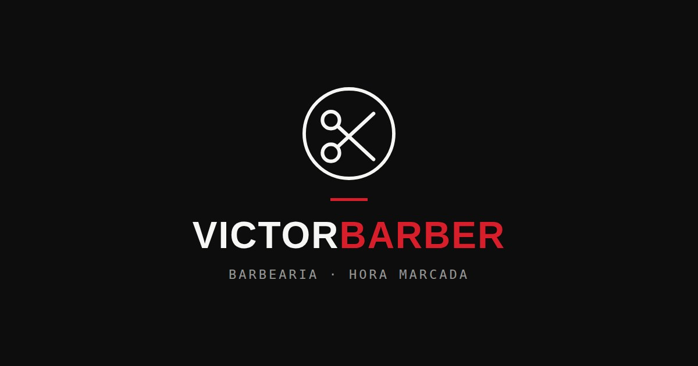

Site institucional · Publicado
Victor Barber
Site de página única para um barbeiro brasileiro que atende no Japão. Reúne apresentação da marca, galeria de trabalhos, serviços com preços e agendamento direto pelo WhatsApp — tudo com identidade visual forte em preto, branco e vermelho e layout pensado para o celular.
- HTML5
- CSS3
- JavaScript
- Netlify